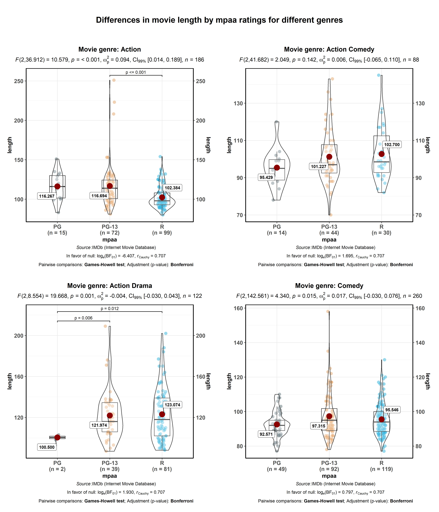
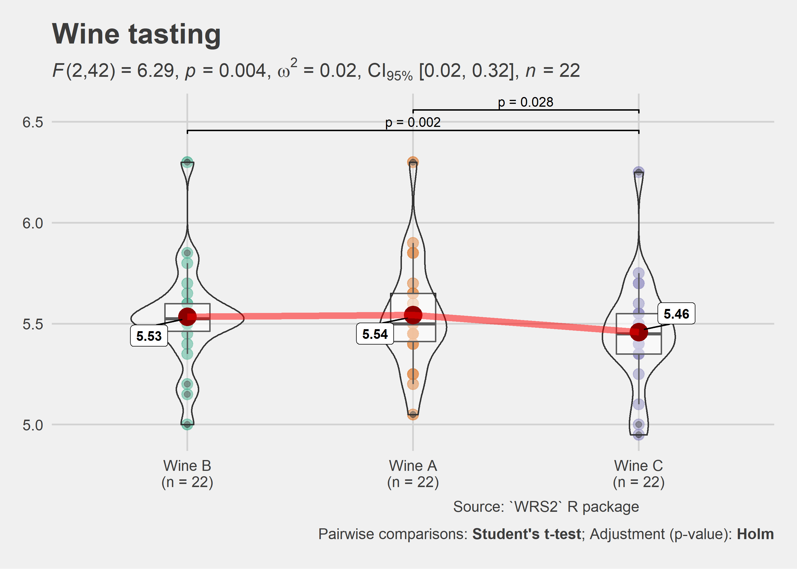
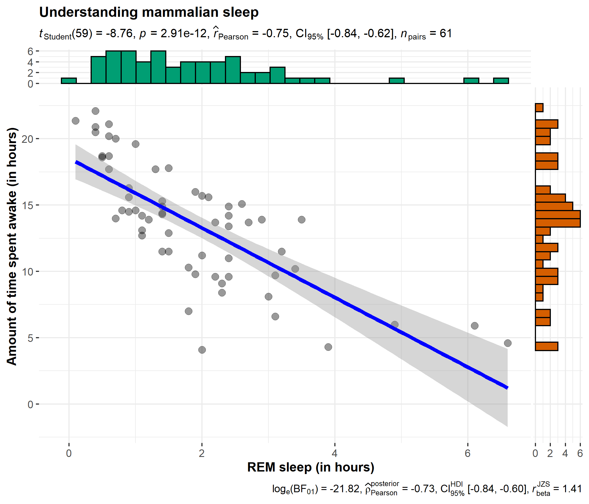
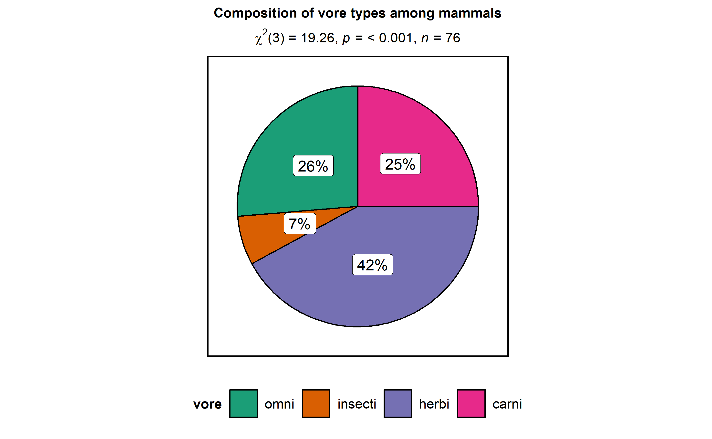
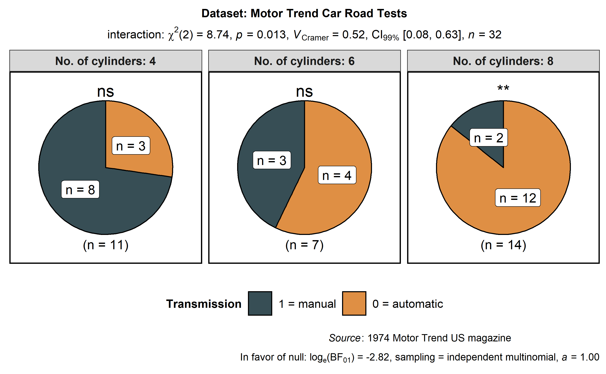
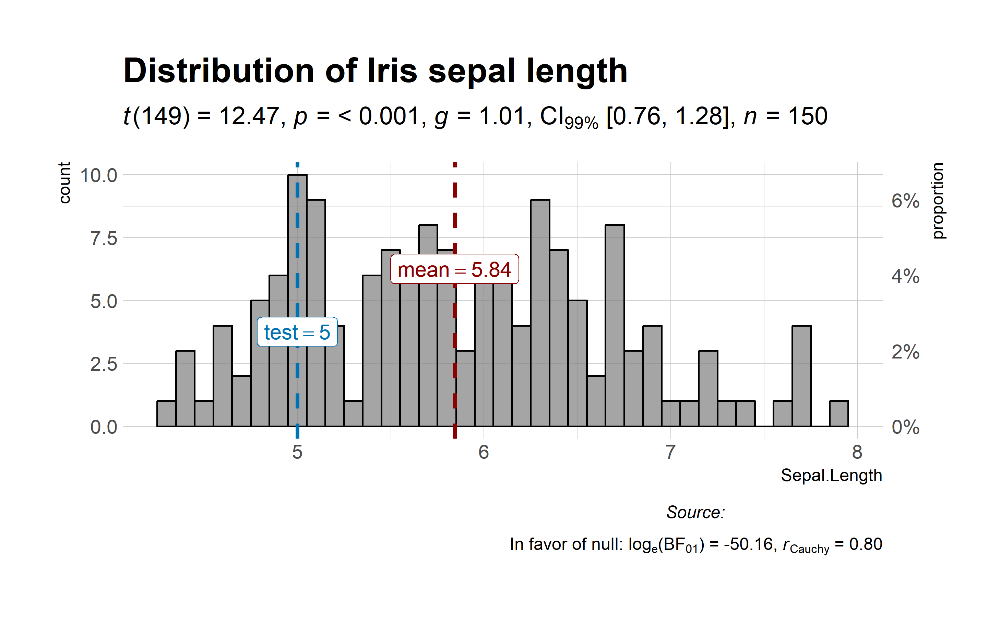
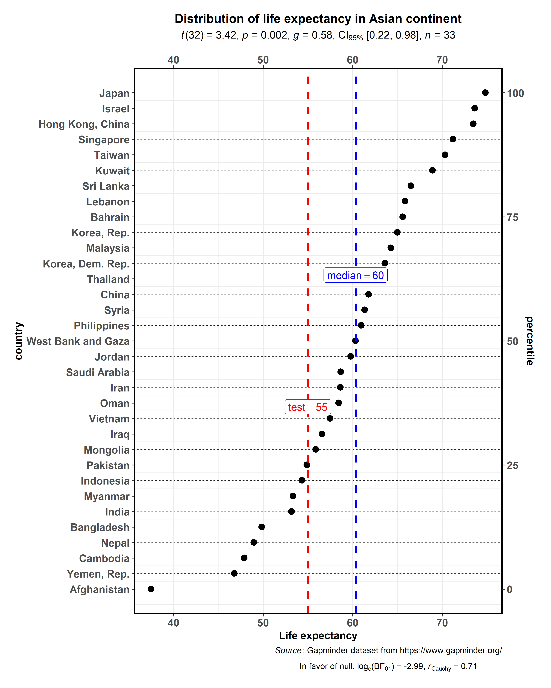

Primary functions
Here are examples of the main functions currently supported in ggstatsplot.
Note: If you are reading this on GitHub repository, the documentation below is for the development version of the package. So you may see some features available here that are not currently present in the stable version of this package on CRAN. For documentation relevant for the CRAN version, see: https://CRAN.R-project.org/package=ggstatsplot/readme/README.html
ggbetweenstats
This function creates either a violin plot, a box plot, or a mix of two for between-group or between-condition comparisons with results from statistical tests in the subtitle. The simplest function call looks like this-
# loading needed libraries
library(ggstatsplot)
# for reproducibility
set.seed(123)
# plot
ggstatsplot::ggbetweenstats(
data = iris,
x = Species,
y = Sepal.Length,
title = "Distribution of sepal length across Iris species"
)
Note that this function returns object of class ggplot and thus can be further modified using ggplot2 functions.
A number of other arguments can be specified to make this plot even more informative or change some of the default options. Additionally, this time we will use a grouping variable that has only two levels. The function will automatically switch from carrying out an ANOVA analysis to a t-test.
The type (of test) argument also accepts the following abbreviations: "p" (for parametric) or "np" (for nonparametric) or "r" (for robust) or "bf" (for Bayes Factor). Additionally, the type of plot to be displayed can also be modified ("box", "violin", or "boxviolin").
A number of other arguments can be specified to make this plot even more informative or change some of the default options.
# for reproducibility
set.seed(123)
library(ggplot2)
# plot
ggstatsplot::ggbetweenstats(
data = ToothGrowth,
x = supp,
y = len,
notch = TRUE, # show notched box plot
mean.ci = TRUE, # whether to display confidence interval for means
k = 3, # number of decimal places for statistical results
outlier.tagging = TRUE, # whether outliers need to be tagged
outlier.label = dose, # variable to be used for the outlier tag
xlab = "Supplement type", # label for the x-axis variable
ylab = "Tooth length", # label for the y-axis variable
title = "The Effect of Vitamin C on Tooth Growth", # title text for the plot
ggtheme = ggthemes::theme_fivethirtyeight(), # choosing a different theme
ggstatsplot.layer = FALSE, # turn off `ggstatsplot` theme layer
package = "wesanderson", # package from which color palette is to be taken
palette = "Darjeeling1" # choosing a different color palette
)
Additionally, there is also a grouped_ variant of this function that makes it easy to repeat the same operation across a single grouping variable:
# for reproducibility
set.seed(123)
# plot
ggstatsplot::grouped_ggbetweenstats(
data = dplyr::filter(
.data = ggstatsplot::movies_long,
genre %in% c("Action", "Action Comedy", "Action Drama", "Comedy")
),
x = mpaa,
y = length,
grouping.var = genre, # grouping variable
pairwise.comparisons = TRUE, # display significant pairwise comparisons
ggsignif.args = list(textsize = 4, tip_length = 0.01),
p.adjust.method = "bonferroni", # method for adjusting p-values for multiple comparisons
# adding new components to `ggstatsplot` default
ggplot.component = list(ggplot2::scale_y_continuous(sec.axis = ggplot2::dup_axis())),
k = 3,
title.prefix = "Movie genre",
caption = substitute(paste(italic("Source"), ":IMDb (Internet Movie Database)")),
palette = "default_jama",
package = "ggsci",
plotgrid.args = list(nrow = 2),
title.text = "Differences in movie length by mpaa ratings for different genres"
)
Summary of tests
Following (between-subjects) tests are carried out for each type of analyses-
| Type | No. of groups | Test |
|---|---|---|
| Parametric | > 2 | Fisher’s or Welch’s one-way ANOVA |
| Non-parametric | > 2 | Kruskal-Wallis one-way ANOVA |
| Robust | > 2 | Heteroscedastic one-way ANOVA for trimmed means |
| Bayes Factor | > 2 | Fisher’s ANOVA |
| Parametric | 2 | Student’s or Welch’s t-test |
| Non-parametric | 2 | Mann-Whitney U test |
| Robust | 2 | Yuen’s test for trimmed means |
| Bayes Factor | 2 | Student’s t-test |
The omnibus effect in one-way ANOVA design can also be followed up with more focal pairwise comparison tests. Here is a summary of multiple pairwise comparison tests supported in ggbetweenstats-
| Type | Equal variance? | Test | p-value adjustment? |
|---|---|---|---|
| Parametric | No | Games-Howell test | Yes |
| Parametric | Yes | Student’s t-test | Yes |
| Non-parametric | No | Dunn test | Yes |
| Robust | No | Yuen’s trimmed means test | Yes |
| Bayes Factor | NA |
Student’s t-test | NA |
For more, see the ggbetweenstats vignette: https://indrajeetpatil.github.io/ggstatsplot/articles/web_only/ggbetweenstats.html
ggwithinstats
ggbetweenstats function has an identical twin function ggwithinstats for repeated measures designs that behaves in the same fashion with a few minor tweaks introduced to properly visualize the repeated measures design. As can be seen from an example below, the only difference between the plot structure is that now the group means are connected by paths to highlight the fact that these data are paired with each other.
# for reproducibility and data
set.seed(123)
library(WRS2)
# plot
ggstatsplot::ggwithinstats(
data = WineTasting,
x = Wine,
y = Taste,
pairwise.comparisons = TRUE, # show pairwise comparison test results
title = "Wine tasting",
caption = "Data source: `WRS2` R package",
ggtheme = ggthemes::theme_fivethirtyeight(),
ggstatsplot.layer = FALSE,
messages = FALSE
)
As with the ggbetweenstats, this function also has a grouped_ variant that makes repeating the same analysis across a single grouping variable quicker. We will see an example with only repeated measurements-
# common setup
set.seed(123)
# plot
ggstatsplot::grouped_ggwithinstats(
data = dplyr::filter(
.data = ggstatsplot::bugs_long,
region %in% c("Europe", "North America"),
condition %in% c("LDLF", "LDHF")
),
x = condition,
y = desire,
xlab = "Condition",
ylab = "Desire to kill an artrhopod",
grouping.var = region,
outlier.tagging = TRUE,
outlier.label = education,
ggtheme = hrbrthemes::theme_ipsum_tw(),
ggstatsplot.layer = FALSE,
messages = FALSE
)
Summary of tests
Following (within-subjects) tests are carried out for each type of analyses-
| Type | No. of groups | Test |
|---|---|---|
| Parametric | > 2 | One-way repeated measures ANOVA |
| Non-parametric | > 2 | Friedman’s rank sum test |
| Robust | > 2 | Heteroscedastic one-way repeated measures ANOVA for trimmed means |
| Bayes Factor | > 2 | One-way repeated measures ANOVA |
| Parametric | 2 | Student’s t-test |
| Non-parametric | 2 | Wilcoxon signed-rank test |
| Robust | 2 | Yuen’s test on trimmed means for dependent samples |
| Bayes Factor | 2 | Student’s t-test |
The omnibus effect in one-way ANOVA design can also be followed up with more focal pairwise comparison tests. Here is a summary of multiple pairwise comparison tests supported in ggwithinstats-
| Type | Test | p-value adjustment? |
|---|---|---|
| Parametric | Student’s t-test | Yes |
| Non-parametric | Durbin-Conover test | Yes |
| Robust | Yuen’s trimmed means test | Yes |
| Bayes Factor | Student’s t-test | NA |
For more, see the ggwithinstats vignette: https://indrajeetpatil.github.io/ggstatsplot/articles/web_only/ggwithinstats.html
ggscatterstats
This function creates a scatterplot with marginal distributions overlaid on the axes (from ggExtra::ggMarginal) and results from statistical tests in the subtitle:
ggstatsplot::ggscatterstats(
data = ggplot2::msleep,
x = sleep_rem,
y = awake,
xlab = "REM sleep (in hours)",
ylab = "Amount of time spent awake (in hours)",
title = "Understanding mammalian sleep",
messages = FALSE
)
The available marginal distributions are-
- histograms
- boxplots
- density
- violin
- densigram (density + histogram)
Number of other arguments can be specified to modify this basic plot-
# for reproducibility
set.seed(123)
# plot
ggstatsplot::ggscatterstats(
data = dplyr::filter(.data = ggstatsplot::movies_long, genre == "Action"),
x = budget,
y = rating,
type = "robust", # type of test that needs to be run
xlab = "Movie budget (in million/ US$)", # label for x axis
ylab = "IMDB rating", # label for y axis
label.var = "title", # variable for labeling data points
label.expression = "rating < 5 & budget > 100", # expression that decides which points to label
title = "Movie budget and IMDB rating (action)", # title text for the plot
caption = expression(paste(italic("Note"), ": IMDB stands for Internet Movie DataBase")),
ggtheme = hrbrthemes::theme_ipsum_ps(), # choosing a different theme
ggstatsplot.layer = FALSE, # turn off `ggstatsplot` theme layer
marginal.type = "density", # type of marginal distribution to be displayed
xfill = "pink", # color fill for x-axis marginal distribution
yfill = "#009E73", # color fill for y-axis marginal distribution
centrality.parameter = "median", # central tendency lines to be displayed
messages = FALSE # turn off messages and notes
)
Additionally, there is also a grouped_ variant of this function that makes it easy to repeat the same operation across a single grouping variable. Also, note that, as opposed to the other functions, this function does not return a ggplot object and any modification you want to make can be made in advance using ggplot.component argument (available for all functions, but especially useful for this particular function):
# for reproducibility
set.seed(123)
# plot
ggstatsplot::grouped_ggscatterstats(
data = dplyr::filter(
.data = ggstatsplot::movies_long,
genre %in% c("Action", "Action Comedy", "Action Drama", "Comedy")
),
x = rating,
y = length,
grouping.var = genre, # grouping variable
label.var = title,
label.expression = length > 200,
xfill = "#E69F00",
yfill = "#8b3058",
xlab = "IMDB rating",
title.prefix = "Movie genre",
ggtheme = ggplot2::theme_grey(),
ggplot.component = list(
ggplot2::scale_x_continuous(breaks = seq(2, 9, 1), limits = (c(2, 9)))
),
plotgrid.args = list(nrow = 2),
title.text = "Relationship between movie length by IMDB ratings for different genres"
)
Summary of tests
Following tests are carried out for each type of analyses. Additionally, the correlation coefficients (and their confidence intervals) are used as effect sizes-
| Type | Test | CI? |
|---|---|---|
| Parametric | Pearson’s correlation coefficient | Yes |
| Non-parametric | Spearman’s rank correlation coefficient | Yes |
| Robust | Percentage bend correlation coefficient | Yes |
| Bayes Factor | Pearson’s correlation coefficient | No |
For more, see the ggscatterstats vignette: https://indrajeetpatil.github.io/ggstatsplot/articles/web_only/ggscatterstats.html
ggpiestats
This function creates a pie chart for categorical or nominal variables with results from contingency table analysis (Pearson’s chi-squared test for between-subjects design and McNemar’s chi-squared test for within-subjects design) included in the subtitle of the plot. If only one categorical variable is entered, results from one-sample proportion test (i.e., a chi-squared goodness of fit test) will be displayed as a subtitle.
To study an interaction between two categorical variables:
# for reproducibility
set.seed(123)
# plot
ggstatsplot::ggpiestats(
data = mtcars,
x = am,
y = cyl,
title = "Dataset: Motor Trend Car Road Tests", # title for the plot
legend.title = "Transmission", # title for the legend
caption = substitute(paste(italic("Source"), ": 1974 Motor Trend US magazine")),
messages = FALSE
)
In case of repeated measures designs, setting paired = TRUE will produce results from McNemar’s chi-squared test-
# for reproducibility
set.seed(123)
# plot
ggstatsplot::ggpiestats(
data = data.frame(
"before" = c("Approve", "Approve", "Disapprove", "Disapprove"),
"after" = c("Approve", "Disapprove", "Approve", "Disapprove"),
counts = c(794, 150, 86, 570),
check.names = FALSE
),
x = before,
y = after,
counts = counts,
title = "Survey results before and after the intervention",
label = "both",
paired = TRUE, # within-subjects design
package = "wesanderson",
palette = "Royal1"
)
Additionally, there is also a grouped_ variant of this function that makes it easy to repeat the same operation across a single grouping variable. Following example is a case where the theoretical question is about proportions for different levels of a single nominal variable:
# for reproducibility
set.seed(123)
# plot
ggstatsplot::grouped_ggpiestats(
data = ggstatsplot::movies_long,
x = genre,
grouping.var = mpaa, # grouping variable
title.prefix = "Movie genre", # prefix for the faceted title
label.repel = TRUE, # repel labels (helpful for overlapping labels)
package = "ggsci", # package from which color palette is to be taken
palette = "default_ucscgb", # choosing a different color palette
title.text = "Composition of MPAA ratings for different genres"
)
Summary of tests
Following tests are carried out for each type of analyses-
| Type of data | Design | Test |
|---|---|---|
| Unpaired |
|
Pearson’s |
| Paired |
|
McNemar’s |
| Frequency |
|
Goodness of fit ( |
Following effect sizes (and confidence intervals/CI) are available for each type of test-
| Type | Effect size | CI? |
|---|---|---|
| Pearson’s chi-squared test | Cramér’s V | Yes |
| McNemar’s test | Cohen’s g | Yes |
| Goodness of fit | Cramér’s V | Yes |
For more, see the ggpiestats vignette: https://indrajeetpatil.github.io/ggstatsplot/articles/web_only/ggpiestats.html
ggbarstats
In case you are not a fan of pie charts (for very good reasons), you can alternatively use ggbarstats function which has a similar syntax-
# for reproducibility
set.seed(123)
library(ggplot2)
# plot
ggstatsplot::ggbarstats(
data = ggstatsplot::movies_long,
x = mpaa,
y = genre,
sampling.plan = "jointMulti",
title = "MPAA Ratings by Genre",
xlab = "movie genre",
legend.title = "MPAA rating",
ggtheme = hrbrthemes::theme_ipsum_pub(),
ggplot.component = list(scale_x_discrete(guide = guide_axis(n.dodge = 2))),
palette = "Set2",
messages = FALSE
)
And, needless to say, there is also a grouped_ variant of this function-
# setup
set.seed(123)
# smaller dataset
df <-
dplyr::filter(
.data = forcats::gss_cat,
race %in% c("Black", "White"),
relig %in% c("Protestant", "Catholic", "None"),
!partyid %in% c("No answer", "Don't know", "Other party")
)
# plot
ggstatsplot::grouped_ggbarstats(
data = df,
x = relig,
y = partyid,
grouping.var = race,
title.prefix = "Race",
xlab = "Party affiliation",
ggtheme = ggthemes::theme_tufte(base_size = 12),
ggstatsplot.layer = FALSE,
title.text = "Race, religion, and political affiliation",
plotgrid.args = list(nrow = 2)
)
gghistostats
To visualize the distribution of a single variable and check if its mean is significantly different from a specified value with a one-sample test, gghistostats can be used.
# for reproducibility
set.seed(123)
# plot
ggstatsplot::gghistostats(
data = iris, # dataframe from which variable is to be taken
x = Sepal.Length, # numeric variable whose distribution is of interest
title = "Distribution of Iris sepal length", # title for the plot
caption = substitute(paste(italic("Source:"), "Ronald Fisher's Iris data set")),
bar.measure = "both",
test.value = 5, # default value is 0
test.value.line = TRUE, # display a vertical line at test value
centrality.parameter = "mean", # which measure of central tendency is to be plotted
centrality.line.args = list(color = "darkred"), # aesthetics for central tendency line
binwidth = 0.10, # binwidth value (experiment)
ggtheme = hrbrthemes::theme_ipsum_tw(), # choosing a different theme
ggstatsplot.layer = FALSE # turn off ggstatsplot theme layer
)
As can be seen from the plot, Bayes Factor can be attached (bf.message = TRUE) to assess evidence in favor of the null hypothesis.
Additionally, there is also a grouped_ variant of this function that makes it easy to repeat the same operation across a single grouping variable:
# for reproducibility
set.seed(123)
# plot
ggstatsplot::grouped_gghistostats(
data = dplyr::filter(
.data = ggstatsplot::movies_long,
genre %in% c("Action", "Action Comedy", "Action Drama", "Comedy")
),
x = budget,
xlab = "Movies budget (in million US$)",
type = "robust", # use robust location measure
grouping.var = genre, # grouping variable
normal.curve = TRUE, # superimpose a normal distribution curve
normal.curve.args = list(color = "red", size = 1),
title.prefix = "Movie genre",
ggtheme = ggthemes::theme_tufte(),
ggplot.component = list( # modify the defaults from `ggstatsplot` for each plot
ggplot2::scale_x_continuous(breaks = seq(0, 200, 50), limits = (c(0, 200)))
),
plotgrid.args = list(nrow = 2),
title.text = "Movies budgets for different genres"
)
Summary of tests
Following tests are carried out for each type of analyses-
| Type | Test |
|---|---|
| Parametric | One-sample Student’s t-test |
| Non-parametric | One-sample Wilcoxon test |
| Robust | One-sample percentile bootstrap |
| Bayes Factor | One-sample Student’s t-test |
Following effect sizes (and confidence intervals/CI) are available for each type of test-
| Type | Effect size | CI? |
|---|---|---|
| Parametric | Cohen’s d, Hedge’s g (central-and noncentral-t distribution based) | Yes |
| Non-parametric | r | Yes |
| Robust | robust location measure | Yes |
| Bayes Factor | No | No |
For more, including information about the variant of this function grouped_gghistostats, see the gghistostats vignette: https://indrajeetpatil.github.io/ggstatsplot/articles/web_only/gghistostats.html
ggdotplotstats
This function is similar to gghistostats, but is intended to be used when the numeric variable also has a label.
# for reproducibility
set.seed(123)
# plot
ggdotplotstats(
data = dplyr::filter(.data = gapminder::gapminder, continent == "Asia"),
y = country,
x = lifeExp,
test.value = 55,
test.value.line = TRUE,
centrality.parameter = "median",
centrality.k = 0,
title = "Distribution of life expectancy in Asian continent",
xlab = "Life expectancy",
caption = substitute(
paste(
italic("Source"),
": Gapminder dataset from https://www.gapminder.org/"
)
)
)
As with the rest of the functions in this package, there is also a grouped_ variant of this function to facilitate looping the same operation for all levels of a single grouping variable.
# for reproducibility
set.seed(123)
# plot
ggstatsplot::grouped_ggdotplotstats(
data = dplyr::filter(.data = ggplot2::mpg, cyl %in% c("4", "6")),
x = cty,
y = manufacturer,
xlab = "city miles per gallon",
ylab = "car manufacturer",
type = "nonparametric", # non-parametric test
grouping.var = cyl, # grouping variable
test.value = 15.5,
test.value.line = TRUE,
title.prefix = "cylinder count",
point.args = list(color = "red", size = 5, shape = 13),
title.text = "Fuel economy data"
)
ggcorrmat
ggcorrmat makes a correlalogram (a matrix of correlation coefficients) with minimal amount of code. Just sticking to the defaults itself produces publication-ready correlation matrices. But, for the sake of exploring the available options, let’s change some of the defaults. For example, multiple aesthetics-related arguments can be modified to change the appearance of the correlation matrix.
# for reproducibility
set.seed(123)
# as a default this function outputs a correlation matrix plot
ggstatsplot::ggcorrmat(
data = ggplot2::msleep,
type = "robust", # correlation method
p.adjust.method = "holm", # p-value adjustment method for multiple comparisons
cor.vars = c(sleep_rem, awake:bodywt), # a range of variables can be selected
cor.vars.names = c(
"REM sleep", # variable names
"time awake",
"brain weight",
"body weight"
),
matrix.type = "upper", # type of visualization matrix
colors = c("#B2182B", "white", "#4D4D4D"),
title = "Correlalogram for mammals sleep dataset",
subtitle = "sleep units: hours; weight units: kilograms",
caption = "Source: `ggplot2` R package"
)
Two things to note:
If there are
NAs present in the selected variables, the legend will display minimum, median, and maximum number of pairs used for correlation tests.If
cor.varsare not specified, all numeric variables will be used.
There is also a grouped_ variant of this function that makes it easy to repeat the same operation across a single grouping variable:
# for reproducibility
set.seed(123)
# plot
ggstatsplot::grouped_ggcorrmat(
data = dplyr::filter(
.data = ggstatsplot::movies_long,
genre %in% c("Action", "Action Comedy", "Action Drama", "Comedy")
),
cor.vars = length:votes,
colors = c("#cbac43", "white", "#550000"),
grouping.var = genre, # grouping variable
k = 3L, # number of digits after decimal point
title.prefix = "Movie genre",
plotgrid.args = list(nrow = 2)
)
You can also get a dataframe containing all relevant details from the statistical tests:
# setup
set.seed(123)
# dataframe in long format
ggcorrmat(
data = ggplot2::msleep,
type = "bayes",
output = "dataframe"
)
#> # A tibble: 15 x 12
#> parameter1 parameter2 rho ci_low ci_high pd rope_percentage
#> <chr> <chr> <dbl> <dbl> <dbl> <dbl> <dbl>
#> 1 sleep_total sleep_rem 0.735 0.617 0.810 1 0
#> 2 sleep_total sleep_cycle -0.436 -0.645 -0.194 0.998 0.0225
#> 3 sleep_total awake -1.00 -1.00 -1.00 1 0
#> 4 sleep_total brainwt -0.344 -0.525 -0.157 0.997 0.0222
#> 5 sleep_total bodywt -0.295 -0.456 -0.142 0.997 0.0318
#> 6 sleep_rem sleep_cycle -0.308 -0.539 -0.0463 0.969 0.0985
#> 7 sleep_rem awake -0.733 -0.827 -0.640 1 0
#> 8 sleep_rem brainwt -0.206 -0.413 0.0106 0.924 0.208
#> 9 sleep_rem bodywt -0.313 -0.492 -0.132 0.994 0.0368
#> 10 sleep_cycle awake 0.440 0.213 0.659 0.992 0.0205
#> 11 sleep_cycle brainwt 0.823 0.716 0.910 1 0
#> 12 sleep_cycle bodywt 0.379 0.133 0.607 0.988 0.0385
#> 13 awake brainwt 0.341 0.160 0.520 0.996 0.03
#> 14 awake bodywt 0.302 0.144 0.463 0.998 0.0295
#> 15 brainwt bodywt 0.925 0.892 0.955 1 0
#> prior_distribution prior_location prior_scale bf nobs
#> <chr> <dbl> <dbl> <dbl> <int>
#> 1 cauchy 0 0.707 3.00e+ 9 61
#> 2 cauchy 0 0.707 8.85e+ 0 32
#> 3 cauchy 0 0.707 NA 83
#> 4 cauchy 0 0.707 7.29e+ 0 56
#> 5 cauchy 0 0.707 9.28e+ 0 83
#> 6 cauchy 0 0.707 1.42e+ 0 32
#> 7 cauchy 0 0.707 3.01e+ 9 61
#> 8 cauchy 0 0.707 6.54e- 1 48
#> 9 cauchy 0 0.707 4.80e+ 0 61
#> 10 cauchy 0 0.707 8.85e+ 0 32
#> 11 cauchy 0 0.707 3.80e+ 6 30
#> 12 cauchy 0 0.707 3.76e+ 0 32
#> 13 cauchy 0 0.707 7.29e+ 0 56
#> 14 cauchy 0 0.707 9.27e+ 0 83
#> 15 cauchy 0 0.707 1.58e+22 56Summary of tests
Following tests are carried out for each type of analyses. Additionally, the correlation coefficients (and their confidence intervals) are used as effect sizes-
| Type | Test | CI? |
|---|---|---|
| Parametric | Pearson’s correlation coefficient | Yes |
| Non-parametric | Spearman’s rank correlation coefficient | Yes |
| Robust | Percentage bend correlation coefficient | Yes |
| Bayes Factor | Pearson’s correlation coefficient | Yes |
For examples and more information, see the ggcorrmat vignette: https://indrajeetpatil.github.io/ggstatsplot/articles/web_only/ggcorrmat.html
ggcoefstats
The function ggstatsplot::ggcoefstats generates dot-and-whisker plots for regression models saved in a tidy data frame. The tidy dataframes are prepared using the following packages: broom, broom.mixed, and parameters. Additionally, if available, the model summary indices are also extracted from the following packages: broom, broom.mixed, and performance.
Although the statistical models displayed in the plot may differ based on the class of models being investigated, there are few aspects of the plot that will be invariant across models:
The dot-whisker plot contains a dot representing the estimate and their confidence intervals (
95%is the default). The estimate can either be effect sizes (for tests that depend on theFstatistic) or regression coefficients (for tests withtandzstatistic), etc. The function will, by default, display a helpfulx-axis label that should clear up what estimates are being displayed. The confidence intervals can sometimes be asymmetric if bootstrapping was used.The caption will always contain diagnostic information, if available, about models that can be useful for model selection: The smaller the Akaike’s Information Criterion (AIC) and the Bayesian Information Criterion (BIC) values, the “better” the model is.
The output of this function will be a
ggplot2object and, thus, it can be further modified (e.g., change themes, etc.) withggplot2functions.
# for reproducibility
set.seed(123)
# model
mod <- stats::lm(formula = mpg ~ am * cyl, data = mtcars)
# plot
ggstatsplot::ggcoefstats(mod)
This default plot can be further modified to one’s liking with additional arguments (also, let’s use a different model now):
# for reproducibility
set.seed(123)
# plot
ggstatsplot::ggcoefstats(
x = MASS::rlm(formula = mpg ~ am * cyl, data = mtcars),
point.args = list(color = "red", size = 3, shape = 15),
vline.args = list(size = 1, color = "#CC79A7", linetype = "dotdash"),
stats.label.color = c("#0072B2", "#D55E00", "darkgreen"),
title = "Car performance predicted by transmission & cylinder count",
subtitle = "Source: 1974 Motor Trend US magazine",
ggtheme = hrbrthemes::theme_ipsum_ps(),
ggstatsplot.layer = FALSE
) + # note the order in which the labels are entered
ggplot2::scale_y_discrete(labels = c("transmission", "cylinders", "interaction")) +
ggplot2::labs(x = "regression coefficient", y = NULL)
Most of the regression models that are supported in the underlying packages are also supported by ggcoefstats. For example-
aareg, anova, aov, aovlist, Arima, BFBayesFactor, bayesx, bayesGARCH, BBmm, BBreg, bcplm, betamfx, betaor, bglmerMod, bife, bigglm, biglm, blavaan, bmlm, blmerMod, bracl, brglm2, brmsfit, brmultinom, btergm, cch, cgam, cgamm, cglm, clm, clm2, clmm, clmm2, coeftest, complmrob, confusionMatrix, coxme, coxph, coxph.penal, cpglm, cpglmm, crch, crq, DirichReg, drc, emmGrid, epi.2by2, ergm, feis, felm, fitdistr, flexsurvreg, gam, Gam, gamlss, garch, geeglm, glmc, glmerMod, glmmTMB, gls, glht, glm, glmm, glmmadmb, glmmPQL, glmRob, glmrob, glmx, gmm, hurdle, ivreg, iv_robust, lavaan, lm, lm.beta, lmerMod, lmerModLmerTest, lmodel2, lmRob, lmrob, lm_robust, logitmfx, logitor, logitsf, LORgee, lqm, lqmm, lrm, manova, maov, mcmc, mcmc.list, MCMCglmm, mclogit, mmclogit, mediate, metafor, metaplus, mixor, mjoint, mle2, mlm, multinom, negbin, negbinmfx, negbinirr, nlmerMod, nlrq, nlreg, nls, orcutt, orm, plm, poissonmfx, poissonirr, polr, ridgelm, rjags, rlm, rlmerMod, robmixglm, rq, rqss, semLm, semLme, slm, speedglm, speedlm, stanfit, stanreg, survreg, svyglm, svyolr, svyglm, tobit, truncreg, vgam, vglm, wbgee, wblm, zcpglm, zeroinfl, etc.
Although not shown here, this function can also be used to carry out both frequentist and Bayesian random-effects meta-analysis.
For a more exhaustive account of this function, see the associated vignette- https://indrajeetpatil.github.io/ggstatsplot/articles/web_only/ggcoefstats.html
combine_plots
The full power of ggstatsplot can be leveraged with a functional programming package like purrr that replaces for loops with code that is both more succinct and easier to read and, therefore, purrr should be preferrred 😻. (Another old school option to do this effectively is using the plyr package.)
In such cases, ggstatsplot contains a helper function combine_plots to combine multiple plots, which can be useful for combining a list of plots produced with purrr. This is a wrapper around cowplot::plot_grid and lets you combine multiple plots and add a combination of title, caption, and annotation texts with suitable defaults.
For examples (both with plyr and purrr), see the associated vignette- https://indrajeetpatil.github.io/ggstatsplot/articles/web_only/combine_plots.html
Using ggstatsplot statistical details with custom plots
Sometimes you may not like the default plots produced by ggstatsplot. In such cases, you can use other custom plots (from ggplot2 or other plotting packages) and still use ggstatsplot functions to display results from relevant statistical test.
For example, in the following chunk, we will create plot (ridgeplot) using ggridges package and use ggstatsplot function for extracting results.
set.seed(123)
# loading the needed libraries
library(ggridges)
library(ggplot2)
library(ggstatsplot)
# using `ggstatsplot` to get call with statistical results
stats_results <-
ggstatsplot::ggbetweenstats(
data = morley,
x = Expt,
y = Speed,
output = "subtitle"
)
# using `ggridges` to create plot
ggplot(morley, aes(x = Speed, y = as.factor(Expt), fill = as.factor(Expt))) +
geom_density_ridges(
jittered_points = TRUE,
quantile_lines = TRUE,
scale = 0.9,
alpha = 0.7,
vline_size = 1,
vline_color = "red",
point_size = 0.4,
point_alpha = 1,
position = position_raincloud(adjust_vlines = TRUE)
) + # adding annotations
labs(
title = "Michelson-Morley experiments",
subtitle = stats_results,
x = "Speed of light",
y = "Experiment number"
) + # remove the legend
theme(legend.position = "none")